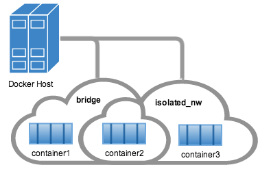

<!DOCTYPE HTML>
<html lang="zh-CN">
<head><meta name="generator" content="Hexo 3.8.0">
    <!--Setting-->
    <meta charset="UTF-8">
    <meta name="viewport" content="width=device-width, user-scalable=no, initial-scale=1.0, maximum-scale=1.0, minimum-scale=1.0">
    <meta http-equiv="X-UA-Compatible" content="IE=Edge,chrome=1">
    <meta http-equiv="Cache-Control" content="no-siteapp">
    <meta http-equiv="Cache-Control" content="no-transform">
    <meta http-equiv="pragma" content="no-cache">
    <meta http-equiv="Cache-Control" content="no-cache, must-revalidate">
    <meta http-equiv="expires" content="Mon Apr 06 2020 02:12:39 GMT+0800 (CST)">
    <meta name="renderer" content="webkit|ie-comp|ie-stand">
    <meta name="apple-mobile-web-app-capable" content="张万众的博客 - 关注Spring Cloud、Docker">
    <meta name="apple-mobile-web-app-status-bar-style" content="black">
    <meta name="format-detection" content="telephone=no,email=no,adress=no">
    <meta name="browsermode" content="application">
    <meta name="screen-orientation" content="portrait">
    <meta name="theme-version" content="1.2.3">
    <meta name="root" content="/">
    
    <!--SEO-->

    <meta name="keywords" content="Docker">


    <meta name="description" content="本文提供可用于与Docker网络及与网络中容器进行交互的network子命令的示例。这些命令可通过Docker Engine CLI获得。 这些命令是：

docker network create
docker network connect
docker network ls
docker...">


<meta name="robots" content="all">
<meta name="google" content="all">
<meta name="googlebot" content="all">
<meta name="verify" content="all">
    <!--Title-->


<title>Docker系列教程16-network命令 | 张万众的博客 - 关注Spring Cloud、Docker</title>


    <link rel="alternate" href="../../atom.html" title="张万众的博客 - 关注Spring Cloud、Docker" type="application/atom+xml">


    

    


<link rel="stylesheet" href="../../static/css/bootstrap.min-271a649e0635d6fa1b.css">
<link rel="stylesheet" href="../../static/css/font-awesome.min-ac2bebcf7fb5b26.css">
<link rel="stylesheet" href="../../static/css/style-6f3c140f6eee20e6591da00ec0.css">


    


    <script>
        var _hmt = _hmt || [];
        (function() {
            var hm = document.createElement("script");
            hm.src = "https://hm.baidu.com/hm.js?13766878cde148282622871dd245a973";
            var s = document.getElementsByTagName("script")[0];
            s.parentNode.insertBefore(hm, s);
        })();
    </script>


    

</head>

</html>
<!--[if lte IE 8]>
<style>
    html{ font-size: 1em }
</style>
<![endif]-->
<!--[if lte IE 9]>
<div style="ie">你使用的浏览器版本过低，为了你更好的阅读体验，请更新浏览器的版本或者使用其他现代浏览器，比如Chrome、Firefox、Safari等。</div>
<![endif]-->

<body>
    
    <nav class="main-navigation">
    <div class="container">
        <div class="row clearfix">
            <div class="col-md-12 column">
                <nav class="navbar navbar-default" style="background-color:#fff;border:0;margin-bottom:0" role="navigation">
                    <div class="navbar-header">
                        <button type="button" class="navbar-toggle" data-toggle="collapse" data-target="#navbar-collapse-1">
                            <span class="sr-only">切</span>
                            <span class="icon-bar"></span>
                            <span class="icon-bar"></span>
                            <span class="icon-bar"></span>
                        </button>
                        <a class="logo" href="../../index.html">
                            张万众的博客
                        </a>
                    </div>

                    <div class="collapse navbar-collapse" style="border:0;" id="navbar-collapse-1">
                        <ul class="nav navbar-nav">
                            
                                
                                    <li>
                                        <a href="../../about.html" target="_blank">
                                            <i class="fa fa-user"></i>
                                            关于我
                                        </a>
                                    </li>
                                
                            
                                
                                    <li>
                                        <a href="../../archives.html" target="_blank">
                                            <i class="fa fa-archive"></i>
                                            归档
                                        </a>
                                    </li>
                                
                            
                                
                                    <li class="dropdown">
                                        <a href="#" class="dropdown-toggle" data-toggle="dropdown" data-hover="dropdown">
                                            <i class="fa fa-fire"></i>
                                            系列课程
                                            <strong class="caret"></strong>
                                        </a>
                                        <ul class="dropdown-menu">
                                            
                                                <li>
                                                    <a href="../00-docker-lession-index.html" target="_blank">
                                                        <i class="fa "></i>
                                                        Docker系列教程
                                                    </a>
                                                </li>
                                            
                                                <li>
                                                    <a href="../../spring-cloud/spring-cloud-index.html" target="_blank">
                                                        <i class="fa "></i>
                                                        Spring Cloud系列教程
                                                    </a>
                                                </li>
                                            
                                                <li>
                                                    <a href="../../spring-boot/spring-boot-index.html" target="_blank">
                                                        <i class="fa "></i>
                                                        Spring Boot系列教程
                                                    </a>
                                                </li>
                                            
                                        </ul>
                                    </li>
                                
                            
                                
                                    <li class="dropdown">
                                        <a href="#" class="dropdown-toggle" data-toggle="dropdown" data-hover="dropdown">
                                            <i class="fa fa-book"></i>
                                            开源书
                                            <strong class="caret"></strong>
                                        </a>
                                        <ul class="dropdown-menu">
                                            
                                                <li>
                                                    <a href="../../books/rocketmq.html" target="_blank">
                                                        <i class="fa fa-rocket"></i>
                                                        RocketMQ开发者指南
                                                    </a>
                                                </li>
                                            
                                                <li>
                                                    <a href="../../books/skywalking.html" target="_blank">
                                                        <i class="fa fa-skyatlas"></i>
                                                        Skywalking 6.2.0中文文档
                                                    </a>
                                                </li>
                                            
                                        </ul>
                                    </li>
                                
                            
                                
                                    <li class="dropdown">
                                        <a href="#" class="dropdown-toggle" data-toggle="dropdown" data-hover="dropdown">
                                            <i class="fa fa-cog"></i>
                                            工具
                                            <strong class="caret"></strong>
                                        </a>
                                        <ul class="dropdown-menu">
                                            
                                                <li>
                                                    <a href="../../tools/markdown2.html" target="_blank">
                                                        <i class="fa "></i>
                                                        微信排版工具2.0
                                                    </a>
                                                </li>
                                            
                                        </ul>
                                    </li>
                                
                            
                        </ul>
                        
                            <form id="search-form" class="navbar-form navbar-right">
                                <div class="form-group input-group">
                                    <input type="text" id="local-search-input" class="form-control" placeholder="搜我...">
                                    <span class="input-group-btn">
                                        <a class="btn btn-default">
                                            <i class="fa fa-search"></i>
                                        </a>
                                    </span>
                                </div>
                                <div id="local-search-result" class="local-search-result-cls"></div>
                            </form>
                        
                    </div>
                </nav>
            </div>
        </div>
    </div>
</nav>

    <a href="javascript:;" target="_blank">
        
    </a>


    <section class="content-wrap">
        <div class="container">
            <div class="row">
                <main class="col-md-8 main-content m-post">
                    

<p id="process"></p>
<article class="post">
    <div class="post-head">
        <h1 id="Docker系列教程16-network命令">
            
                Docker系列教程16-network命令
            
        </h1>
        <div class="post-meta">
    
        <span class="categories-meta fa-wrap">
            <i class="fa fa-folder-open-o"></i>
            <a class="category-link" href="javascript:;">Docker</a>
        </span>
    

    
        <span class="fa-wrap">
            <i class="fa fa-tags"></i>
            <span class="tags-meta">
                
                    <a class="tag-link" href="javascript:;">Docker</a>
                
            </span>
        </span>
    

    
        
        <span class="fa-wrap">
            <i class="fa fa-clock-o"></i>
            <span class="date-meta">2018/03/26</span>
        </span>
        
            <span class="fa-wrap">
                <i class="fa fa-eye"></i>
                <span id="busuanzi_value_page_pv"></span>
            </span>
        
    
</div>
        
        
    </div>
    
    <div class="post-body post-content" id="post-content">
        
    <div class="toc-article">
        <strong>
            目录
        </strong>
        <div class="toc-content">
            <ol class="toc"><li class="toc-item toc-level-2"><a class="toc-link" href="#创建网络"><span class="toc-text">创建网络</span></a></li><li class="toc-item toc-level-2"><a class="toc-link" href="#连接容器"><span class="toc-text">连接容器</span></a><ol class="toc-child"><li class="toc-item toc-level-3"><a class="toc-link" href="#基本容器网络示例"><span class="toc-text">基本容器网络示例</span></a></li><li class="toc-item toc-level-3"><a class="toc-link" href="#链接容器而不使用用户定义的网络"><span class="toc-text">链接容器而不使用用户定义的网络</span></a></li><li class="toc-item toc-level-3"><a class="toc-link" href="#网络范围的别名示例"><span class="toc-text">网络范围的别名示例</span></a></li><li class="toc-item toc-level-3"><a class="toc-link" href="#docker-network-限制"><span class="toc-text">docker network 限制</span></a><ol class="toc-child"><li class="toc-item toc-level-4"><a class="toc-link" href="#环境变量注入"><span class="toc-text">环境变量注入</span></a></li><li class="toc-item toc-level-4"><a class="toc-link" href="#使用网络范围的别名"><span class="toc-text">使用网络范围的别名</span></a></li><li class="toc-item toc-level-4"><a class="toc-link" href="#将多个容器解析为一个别名"><span class="toc-text">将多个容器解析为一个别名</span></a></li></ol></li></ol></li><li class="toc-item toc-level-2"><a class="toc-link" href="#断开容器"><span class="toc-text">断开容器</span></a><ol class="toc-child"><li class="toc-item toc-level-3"><a class="toc-link" href="#处理过时的网络端点"><span class="toc-text">处理过时的网络端点</span></a></li></ol></li><li class="toc-item toc-level-2"><a class="toc-link" href="#删除网络"><span class="toc-text">删除网络</span></a></li><li class="toc-item toc-level-2"><a class="toc-link" href="#相关信息"><span class="toc-text">相关信息</span></a></li><li class="toc-item toc-level-2"><a class="toc-link" href="#原文"><span class="toc-text">原文</span></a></li></ol>
        </div>
    </div>


        <p>本文提供可用于与Docker网络及与网络中容器进行交互的network子命令的示例。这些命令可通过Docker Engine CLI获得。 这些命令是：</p>
<ul>
<li><code>docker network create</code></li>
<li><code>docker network connect</code></li>
<li><code>docker network ls</code></li>
<li><code>docker network rm</code></li>
<li><code>docker network disconnect</code></li>
<li><code>docker network inspect</code></li>
</ul>
<a id="more"></a>
<p>虽然不是必需的，但在尝试本节中的示例之前，先阅读 <a href="javascript:;" target="_blank" rel="noopener">了解Docker网络</a> 更佳。 示例使用默认<code>bridge</code> 网络以便您可以立即尝试。要实验<code>overlay</code>网络，请参阅 <a href="javascript:;" target="_blank" rel="noopener">多主机网络入门指南</a> 。</p>
<h2 id="创建网络"><a href="#创建网络" class="headerlink" title="创建网络"></a>创建网络</h2><p>Docker Engine在安装时自动创建<code>bridge</code> 网络。 该网络对应于Engine传统依赖的<code>docker0</code> 网桥。除该网络外，也可创建自己的<code>bridge</code> 或<code>overlay</code> 网络。</p>
<p><code>bridge</code> 网络驻留在运行Docker Engine实例的单个主机上。 <code>overlay</code> 网络可跨越运行Docker Engine的多个主机。 如果您运行<code>docker network create</code> 并仅提供网络名称，它将为您创建一个桥接网络。</p>
<figure class="highlight shell"><table><tr><td class="gutter"><pre><span class="line">1</span><br><span class="line">2</span><br><span class="line">3</span><br><span class="line">4</span><br><span class="line">5</span><br><span class="line">6</span><br><span class="line">7</span><br><span class="line">8</span><br><span class="line">9</span><br><span class="line">10</span><br><span class="line">11</span><br><span class="line">12</span><br><span class="line">13</span><br><span class="line">14</span><br><span class="line">15</span><br><span class="line">16</span><br><span class="line">17</span><br><span class="line">18</span><br><span class="line">19</span><br><span class="line">20</span><br><span class="line">21</span><br><span class="line">22</span><br><span class="line">23</span><br><span class="line">24</span><br><span class="line">25</span><br></pre></td><td class="code"><pre><span class="line"><span class="meta">$</span> docker network create simple-network</span><br><span class="line"></span><br><span class="line">69568e6336d8c96bbf57869030919f7c69524f71183b44d80948bd3927c87f6a</span><br><span class="line"></span><br><span class="line"><span class="meta">$</span> docker network inspect simple-network</span><br><span class="line">[</span><br><span class="line">    &#123;</span><br><span class="line">        "Name": "simple-network",</span><br><span class="line">        "Id": "69568e6336d8c96bbf57869030919f7c69524f71183b44d80948bd3927c87f6a",</span><br><span class="line">        "Scope": "local",</span><br><span class="line">        "Driver": "bridge",</span><br><span class="line">        "IPAM": &#123;</span><br><span class="line">            "Driver": "default",</span><br><span class="line">            "Config": [</span><br><span class="line">                &#123;</span><br><span class="line">                    "Subnet": "172.22.0.0/16",</span><br><span class="line">                    "Gateway": "172.22.0.1"</span><br><span class="line">                &#125;</span><br><span class="line">            ]</span><br><span class="line">        &#125;,</span><br><span class="line">        "Containers": &#123;&#125;,</span><br><span class="line">        "Options": &#123;&#125;,</span><br><span class="line">        "Labels": &#123;&#125;</span><br><span class="line">    &#125;</span><br><span class="line">]</span><br></pre></td></tr></table></figure>
<p>与<code>bridge</code> 网络不同， <code>overlay</code> 网络需要一些预制条件才能创建——</p>
<ul>
<li>访问key-value存储。 引擎支持Consul，Etcd和ZooKeeper（分布式存储）key-value存储。</li>
<li>与key-value存储连接的主机集群。</li>
<li>在swarm中的每个主机上正确配置的<code>Docker daemon</code> 。</li>
</ul>
<p>支持<code>overlay</code> 网络的<code>dockerd</code> 选项有：</p>
<ul>
<li><code>--cluster-store</code></li>
<li><code>--cluster-store-opt</code></li>
<li><code>--cluster-advertise</code></li>
</ul>
<p>在创建网络时，Docker引擎默认会为网络创建一个不重叠的子网。 您可以覆盖此默认值，并使用<code>--subnet</code> 选项直接指定子网。 对于<code>bridge</code> 网络，只可指定一个子网。 <code>overlay</code> 网络支持多个子网。</p>
<blockquote>
<p><strong>注意</strong> ：强烈建议在创建网络时使用<code>--subnet</code> 选项。 如果未指定<code>--subnet</code> 则Docker daemon会自动为网络选择并分配子网，这可能会导致与您基础结构中的另一个子网（该子网不受<code>--subnet</code> 管理）重叠。 当容器连接到该网络时，这种重叠可能导致连接问题或故障。</p>
</blockquote>
<p>除<code>--subnet</code> 选项以外，您还可以指定<code>--gateway</code> ， <code>--ip-range</code> <code>--gateway</code> <code>--ip-range</code>和<code>--aux-address</code>选项。</p>
<figure class="highlight shell"><table><tr><td class="gutter"><pre><span class="line">1</span><br><span class="line">2</span><br><span class="line">3</span><br><span class="line">4</span><br><span class="line">5</span><br><span class="line">6</span><br><span class="line">7</span><br><span class="line">8</span><br><span class="line">9</span><br></pre></td><td class="code"><pre><span class="line"><span class="meta">$</span> docker network create -d overlay \</span><br><span class="line">  --subnet=192.168.0.0/16 \</span><br><span class="line">  --subnet=192.170.0.0/16 \</span><br><span class="line">  --gateway=192.168.0.100 \</span><br><span class="line">  --gateway=192.170.0.100 \</span><br><span class="line">  --ip-range=192.168.1.0/24 \</span><br><span class="line">  --aux-address="my-router=192.168.1.5" --aux-address="my-switch=192.168.1.6" \</span><br><span class="line">  --aux-address="my-printer=192.170.1.5" --aux-address="my-nas=192.170.1.6" \</span><br><span class="line">  my-multihost-network</span><br></pre></td></tr></table></figure>
<p>确保您的子网不重叠。 如果重叠，那么网络将会创建失败，Docker Engine返回错误。</p>
<p>创建自定义网络时，您可以向驱动传递其他选项。 <code>bridge</code> 驱动程序接受以下选项：</p>
<table>
<thead>
<tr>
<th>Option</th>
<th>Equivalent</th>
<th>Description</th>
</tr>
</thead>
<tbody>
<tr>
<td><code>com.docker.network.bridge.name</code></td>
<td>-</td>
<td>创建Linux网桥时要使用的网桥名称</td>
</tr>
<tr>
<td><code>com.docker.network.bridge.enable_ip_masquerade</code></td>
<td><code>--ip-masq</code></td>
<td>启用IP伪装</td>
</tr>
<tr>
<td><code>com.docker.network.bridge.enable_icc</code></td>
<td><code>--icc</code></td>
<td>启用或禁用跨容器连接</td>
</tr>
<tr>
<td><code>com.docker.network.bridge.host_binding_ipv4</code></td>
<td><code>--ip</code></td>
<td>绑定容器端口时的默认IP</td>
</tr>
<tr>
<td><code>com.docker.network.driver.mtu</code></td>
<td><code>--mtu</code></td>
<td>设置容器网络MTU</td>
</tr>
</tbody>
</table>
<p><code>overlay</code> 驱动也支持<code>com.docker.network.driver.mtu</code> 选项。</p>
<p>以下参数可以传递给任何网络驱动的<code>docker network create</code> 。</p>
<table>
<thead>
<tr>
<th>Argument</th>
<th>Equivalent</th>
<th>Description</th>
</tr>
</thead>
<tbody>
<tr>
<td><code>--internal</code></td>
<td>-</td>
<td>限制对网络的外部访问</td>
</tr>
<tr>
<td><code>--ipv6</code></td>
<td><code>--ipv6</code></td>
<td>启用IPv6网络</td>
</tr>
</tbody>
</table>
<p>以下示例使用<code>-o</code> 选项，在绑定端口时绑定到指定的IP地址，然后使用<code>docker network inspect</code> 来检查网络，最后将新容器attach到新网络。</p>
<figure class="highlight shell"><table><tr><td class="gutter"><pre><span class="line">1</span><br><span class="line">2</span><br><span class="line">3</span><br><span class="line">4</span><br><span class="line">5</span><br><span class="line">6</span><br><span class="line">7</span><br><span class="line">8</span><br><span class="line">9</span><br><span class="line">10</span><br><span class="line">11</span><br><span class="line">12</span><br><span class="line">13</span><br><span class="line">14</span><br><span class="line">15</span><br><span class="line">16</span><br><span class="line">17</span><br><span class="line">18</span><br><span class="line">19</span><br><span class="line">20</span><br><span class="line">21</span><br><span class="line">22</span><br><span class="line">23</span><br><span class="line">24</span><br><span class="line">25</span><br><span class="line">26</span><br><span class="line">27</span><br><span class="line">28</span><br><span class="line">29</span><br><span class="line">30</span><br><span class="line">31</span><br><span class="line">32</span><br><span class="line">33</span><br><span class="line">34</span><br><span class="line">35</span><br><span class="line">36</span><br><span class="line">37</span><br><span class="line">38</span><br></pre></td><td class="code"><pre><span class="line"><span class="meta">$</span> docker network create -o "com.docker.network.bridge.host_binding_ipv4"="172.23.0.1" my-network</span><br><span class="line"></span><br><span class="line">b1a086897963e6a2e7fc6868962e55e746bee8ad0c97b54a5831054b5f62672a</span><br><span class="line"></span><br><span class="line"><span class="meta">$</span> docker network inspect my-network</span><br><span class="line"></span><br><span class="line">[</span><br><span class="line">    &#123;</span><br><span class="line">        "Name": "my-network",</span><br><span class="line">        "Id": "b1a086897963e6a2e7fc6868962e55e746bee8ad0c97b54a5831054b5f62672a",</span><br><span class="line">        "Scope": "local",</span><br><span class="line">        "Driver": "bridge",</span><br><span class="line">        "IPAM": &#123;</span><br><span class="line">            "Driver": "default",</span><br><span class="line">            "Options": &#123;&#125;,</span><br><span class="line">            "Config": [</span><br><span class="line">                &#123;</span><br><span class="line">                    "Subnet": "172.23.0.0/16",</span><br><span class="line">                    "Gateway": "172.23.0.1"</span><br><span class="line">                &#125;</span><br><span class="line">            ]</span><br><span class="line">        &#125;,</span><br><span class="line">        "Containers": &#123;&#125;,</span><br><span class="line">        "Options": &#123;</span><br><span class="line">            "com.docker.network.bridge.host_binding_ipv4": "172.23.0.1"</span><br><span class="line">        &#125;,</span><br><span class="line">        "Labels": &#123;&#125;</span><br><span class="line">    &#125;</span><br><span class="line">]</span><br><span class="line"></span><br><span class="line"><span class="meta">$</span> docker run -d -P --name redis --network my-network redis</span><br><span class="line"></span><br><span class="line">bafb0c808c53104b2c90346f284bda33a69beadcab4fc83ab8f2c5a4410cd129</span><br><span class="line"></span><br><span class="line"><span class="meta">$</span> docker ps</span><br><span class="line"></span><br><span class="line">CONTAINER ID        IMAGE               COMMAND                  CREATED             STATUS              PORTS                        NAMES</span><br><span class="line">bafb0c808c53        redis               "/entrypoint.sh redis"   4 seconds ago       Up 3 seconds        172.23.0.1:32770-&gt;6379/tcp   redis</span><br></pre></td></tr></table></figure>
<h2 id="连接容器"><a href="#连接容器" class="headerlink" title="连接容器"></a>连接容器</h2><p>您可以将一个现有容器连接到一个或多个网络。 容器可连接到使用不同网络驱动的网络。 一旦连接，容器即可使用另一个容器的IP地址或名称进行通信。</p>
<p>对于支持多主机连接的<code>overlay</code> 网络或自定义插件，不同主机上的容器，只要连接到同一multi-host network多主机网络，也可以这种方式进行通信。</p>
<p>此示例使用六个容器，并指示您根据需要创建它们。</p>
<h3 id="基本容器网络示例"><a href="#基本容器网络示例" class="headerlink" title="基本容器网络示例"></a>基本容器网络示例</h3><ol>
<li><p>首先，创建并运行两个容器， <code>container1</code>和<code>container2</code> ：</p>
<figure class="highlight shell"><table><tr><td class="gutter"><pre><span class="line">1</span><br><span class="line">2</span><br><span class="line">3</span><br><span class="line">4</span><br><span class="line">5</span><br><span class="line">6</span><br><span class="line">7</span><br></pre></td><td class="code"><pre><span class="line"><span class="meta">$</span> docker run -itd --name=container1 busybox</span><br><span class="line"></span><br><span class="line">18c062ef45ac0c026ee48a83afa39d25635ee5f02b58de4abc8f467bcaa28731</span><br><span class="line"></span><br><span class="line"><span class="meta">$</span> docker run -itd --name=container2 busybox</span><br><span class="line"></span><br><span class="line">498eaaaf328e1018042c04b2de04036fc04719a6e39a097a4f4866043a2c2152</span><br></pre></td></tr></table></figure>
</li>
<li><p>创建一个隔离的<code>bridge</code> 网络进行测试。</p>
<figure class="highlight shell"><table><tr><td class="gutter"><pre><span class="line">1</span><br><span class="line">2</span><br><span class="line">3</span><br></pre></td><td class="code"><pre><span class="line"><span class="meta">$</span> docker network create -d bridge --subnet 172.25.0.0/16 isolated_nw</span><br><span class="line"></span><br><span class="line">06a62f1c73c4e3107c0f555b7a5f163309827bfbbf999840166065a8f35455a8</span><br></pre></td></tr></table></figure>
</li>
<li><p>将<code>container2</code> 连接到网络，然后<code>inspect</code>网络以验证连接：</p>
<figure class="highlight shell"><table><tr><td class="gutter"><pre><span class="line">1</span><br><span class="line">2</span><br><span class="line">3</span><br><span class="line">4</span><br><span class="line">5</span><br><span class="line">6</span><br><span class="line">7</span><br><span class="line">8</span><br><span class="line">9</span><br><span class="line">10</span><br><span class="line">11</span><br><span class="line">12</span><br><span class="line">13</span><br><span class="line">14</span><br><span class="line">15</span><br><span class="line">16</span><br><span class="line">17</span><br><span class="line">18</span><br><span class="line">19</span><br><span class="line">20</span><br><span class="line">21</span><br><span class="line">22</span><br><span class="line">23</span><br><span class="line">24</span><br><span class="line">25</span><br><span class="line">26</span><br><span class="line">27</span><br><span class="line">28</span><br><span class="line">29</span><br><span class="line">30</span><br><span class="line">31</span><br></pre></td><td class="code"><pre><span class="line"><span class="meta">$</span> docker network connect isolated_nw container2</span><br><span class="line"></span><br><span class="line"><span class="meta">$</span> docker network inspect isolated_nw</span><br><span class="line"></span><br><span class="line">[</span><br><span class="line">    &#123;</span><br><span class="line">        "Name": "isolated_nw",</span><br><span class="line">        "Id": "06a62f1c73c4e3107c0f555b7a5f163309827bfbbf999840166065a8f35455a8",</span><br><span class="line">        "Scope": "local",</span><br><span class="line">        "Driver": "bridge",</span><br><span class="line">        "IPAM": &#123;</span><br><span class="line">            "Driver": "default",</span><br><span class="line">            "Config": [</span><br><span class="line">                &#123;</span><br><span class="line">                    "Subnet": "172.25.0.0/16",</span><br><span class="line">                    "Gateway": "172.25.0.1/16"</span><br><span class="line">                &#125;</span><br><span class="line">            ]</span><br><span class="line">        &#125;,</span><br><span class="line">        "Containers": &#123;</span><br><span class="line">            "90e1f3ec71caf82ae776a827e0712a68a110a3f175954e5bd4222fd142ac9428": &#123;</span><br><span class="line">                "Name": "container2",</span><br><span class="line">                "EndpointID": "11cedac1810e864d6b1589d92da12af66203879ab89f4ccd8c8fdaa9b1c48b1d",</span><br><span class="line">                "MacAddress": "02:42:ac:19:00:02",</span><br><span class="line">                "IPv4Address": "172.25.0.2/16",</span><br><span class="line">                "IPv6Address": ""</span><br><span class="line">            &#125;</span><br><span class="line">        &#125;,</span><br><span class="line">        "Options": &#123;&#125;</span><br><span class="line">    &#125;</span><br><span class="line">]</span><br></pre></td></tr></table></figure>
<p>请注意， <code>container2</code> 自动分配了一个IP地址。 因为在创建网络时指定了<code>--subnet</code> 选项，所以IP地址会从该子网选择。</p>
<p><strong>作为提醒</strong>， <code>container1</code> 仅连接到默认<code>bridge</code> 。</p>
</li>
<li><p>启动第三个容器，但这次使用<code>--ip</code> 标志分配一个IP地址，并使用 <code>docker run</code>命令的<code>--network</code>选项将其连接到<code>--isolated_nw</code>网络：</p>
<figure class="highlight shell"><table><tr><td class="gutter"><pre><span class="line">1</span><br><span class="line">2</span><br><span class="line">3</span><br></pre></td><td class="code"><pre><span class="line"><span class="meta">$</span> docker run --network=isolated_nw --ip=172.25.3.3 -itd --name=container3 busybox</span><br><span class="line"></span><br><span class="line">467a7863c3f0277ef8e661b38427737f28099b61fa55622d6c30fb288d88c551</span><br></pre></td></tr></table></figure>
<p>只要您为容器指定的IP地址是如上子网的一部分，那就可使用<code>--ip</code> 或<code>--ip6</code> 标志将IPv4或IPv6地址分配给容器，将其连接到以上网络。 当您在使用用户自定义的网络时以这种方式指定IP地址时，配置将作为容器配置的一部分进行保留，并在容器重新加载时进行应用。 使用非用户自定义网络时，分配的IP地址将被保留，因为不保证Docker daemon重启时容器的子网不会改变，除非您使用用户定义的网络。【这一段官方文档是不是有问题？？？】</p>
</li>
<li><p>检查<code>container3</code> 所使用的网络资源。 简洁起见，截断以下输出。</p>
<figure class="highlight shell"><table><tr><td class="gutter"><pre><span class="line">1</span><br><span class="line">2</span><br><span class="line">3</span><br><span class="line">4</span><br><span class="line">5</span><br><span class="line">6</span><br><span class="line">7</span><br><span class="line">8</span><br><span class="line">9</span><br><span class="line">10</span><br><span class="line">11</span><br><span class="line">12</span><br><span class="line">13</span><br><span class="line">14</span><br><span class="line">15</span><br><span class="line">16</span><br><span class="line">17</span><br><span class="line">18</span><br></pre></td><td class="code"><pre><span class="line"><span class="meta">$</span> docker inspect --format=''  container3</span><br><span class="line"></span><br><span class="line">&#123;"isolated_nw":</span><br><span class="line">  &#123;"IPAMConfig":</span><br><span class="line">    &#123;</span><br><span class="line">      "IPv4Address":"172.25.3.3"&#125;,</span><br><span class="line">      "NetworkID":"1196a4c5af43a21ae38ef34515b6af19236a3fc48122cf585e3f3054d509679b",</span><br><span class="line">      "EndpointID":"dffc7ec2915af58cc827d995e6ebdc897342be0420123277103c40ae35579103",</span><br><span class="line">      "Gateway":"172.25.0.1",</span><br><span class="line">      "IPAddress":"172.25.3.3",</span><br><span class="line">      "IPPrefixLen":16,</span><br><span class="line">      "IPv6Gateway":"",</span><br><span class="line">      "GlobalIPv6Address":"",</span><br><span class="line">      "GlobalIPv6PrefixLen":0,</span><br><span class="line">      "MacAddress":"02:42:ac:19:03:03"&#125;</span><br><span class="line">    &#125;</span><br><span class="line">  &#125;</span><br><span class="line">&#125;</span><br></pre></td></tr></table></figure>
<p>因为在启动时将<code>container3</code> 连接到<code>isolated_nw</code>  ，所以它根本没有连接到默认的<code>bridge</code> 网络。</p>
</li>
<li><p>检查<code>container2</code> 所使用的网络。 如果你安装了Python，你可以打印输出格式化。</p>
<figure class="highlight shell"><table><tr><td class="gutter"><pre><span class="line">1</span><br><span class="line">2</span><br><span class="line">3</span><br><span class="line">4</span><br><span class="line">5</span><br><span class="line">6</span><br><span class="line">7</span><br><span class="line">8</span><br><span class="line">9</span><br><span class="line">10</span><br><span class="line">11</span><br><span class="line">12</span><br><span class="line">13</span><br><span class="line">14</span><br><span class="line">15</span><br><span class="line">16</span><br><span class="line">17</span><br><span class="line">18</span><br><span class="line">19</span><br><span class="line">20</span><br><span class="line">21</span><br><span class="line">22</span><br><span class="line">23</span><br><span class="line">24</span><br><span class="line">25</span><br><span class="line">26</span><br><span class="line">27</span><br><span class="line">28</span><br></pre></td><td class="code"><pre><span class="line"><span class="meta">$</span> docker inspect --format=''  container2 | python -m json.tool</span><br><span class="line"></span><br><span class="line">&#123;</span><br><span class="line">    "bridge": &#123;</span><br><span class="line">        "NetworkID":"7ea29fc1412292a2d7bba362f9253545fecdfa8ce9a6e37dd10ba8bee7129812",</span><br><span class="line">        "EndpointID": "0099f9efb5a3727f6a554f176b1e96fca34cae773da68b3b6a26d046c12cb365",</span><br><span class="line">        "Gateway": "172.17.0.1",</span><br><span class="line">        "GlobalIPv6Address": "",</span><br><span class="line">        "GlobalIPv6PrefixLen": 0,</span><br><span class="line">        "IPAMConfig": null,</span><br><span class="line">        "IPAddress": "172.17.0.3",</span><br><span class="line">        "IPPrefixLen": 16,</span><br><span class="line">        "IPv6Gateway": "",</span><br><span class="line">        "MacAddress": "02:42:ac:11:00:03"</span><br><span class="line">    &#125;,</span><br><span class="line">    "isolated_nw": &#123;</span><br><span class="line">        "NetworkID":"1196a4c5af43a21ae38ef34515b6af19236a3fc48122cf585e3f3054d509679b",</span><br><span class="line">        "EndpointID": "11cedac1810e864d6b1589d92da12af66203879ab89f4ccd8c8fdaa9b1c48b1d",</span><br><span class="line">        "Gateway": "172.25.0.1",</span><br><span class="line">        "GlobalIPv6Address": "",</span><br><span class="line">        "GlobalIPv6PrefixLen": 0,</span><br><span class="line">        "IPAMConfig": null,</span><br><span class="line">        "IPAddress": "172.25.0.2",</span><br><span class="line">        "IPPrefixLen": 16,</span><br><span class="line">        "IPv6Gateway": "",</span><br><span class="line">        "MacAddress": "02:42:ac:19:00:02"</span><br><span class="line">    &#125;</span><br><span class="line">&#125;</span><br></pre></td></tr></table></figure>
<p>请注意， <code>container2</code> 属于两个网络。 当您启动它时，它加入了默认<code>bridge</code> 网络，并在步骤3中将其连接到<code>isolated_nw</code> 。</p>
<p></p>
<p>eth0 Link encap:Ethernet HWaddr 02:42:AC:11:00:03</p>
<p>eth1 Link encap:Ethernet HWaddr 02:42:AC:15:00:02</p>
</li>
<li><p>使用<code>docker attach</code> 命令连接到正在运行的<code>container2</code> 并检查它的网络堆栈：</p>
<figure class="highlight shell"><table><tr><td class="gutter"><pre><span class="line">1</span><br></pre></td><td class="code"><pre><span class="line"><span class="meta">$</span> docker attach container2</span><br></pre></td></tr></table></figure>
<p>使用<code>ifconfig</code> 命令检查容器的网络堆栈。 您应该看到两个以太网卡，一个用于默认<code>bridge</code> ，另一个用于<code>isolated_nw</code> 网络。</p>
<figure class="highlight shell"><table><tr><td class="gutter"><pre><span class="line">1</span><br><span class="line">2</span><br><span class="line">3</span><br><span class="line">4</span><br><span class="line">5</span><br><span class="line">6</span><br><span class="line">7</span><br><span class="line">8</span><br><span class="line">9</span><br><span class="line">10</span><br><span class="line">11</span><br><span class="line">12</span><br><span class="line">13</span><br><span class="line">14</span><br><span class="line">15</span><br><span class="line">16</span><br><span class="line">17</span><br><span class="line">18</span><br><span class="line">19</span><br><span class="line">20</span><br><span class="line">21</span><br><span class="line">22</span><br><span class="line">23</span><br><span class="line">24</span><br><span class="line">25</span><br><span class="line">26</span><br><span class="line">27</span><br><span class="line">28</span><br></pre></td><td class="code"><pre><span class="line"><span class="meta">$</span> sudo ifconfig -a</span><br><span class="line"></span><br><span class="line">eth0      Link encap:Ethernet  HWaddr 02:42:AC:11:00:03</span><br><span class="line">          inet addr:172.17.0.3  Bcast:0.0.0.0  Mask:255.255.0.0</span><br><span class="line">          inet6 addr: fe80::42:acff:fe11:3/64 Scope:Link</span><br><span class="line">          UP BROADCAST RUNNING MULTICAST  MTU:9001  Metric:1</span><br><span class="line">          RX packets:8 errors:0 dropped:0 overruns:0 frame:0</span><br><span class="line">          TX packets:8 errors:0 dropped:0 overruns:0 carrier:0</span><br><span class="line">          collisions:0 txqueuelen:0</span><br><span class="line">          RX bytes:648 (648.0 B)  TX bytes:648 (648.0 B)</span><br><span class="line"></span><br><span class="line">eth1      Link encap:Ethernet  HWaddr 02:42:AC:15:00:02</span><br><span class="line">          inet addr:172.25.0.2  Bcast:0.0.0.0  Mask:255.255.0.0</span><br><span class="line">          inet6 addr: fe80::42:acff:fe19:2/64 Scope:Link</span><br><span class="line">          UP BROADCAST RUNNING MULTICAST  MTU:1500  Metric:1</span><br><span class="line">          RX packets:8 errors:0 dropped:0 overruns:0 frame:0</span><br><span class="line">          TX packets:8 errors:0 dropped:0 overruns:0 carrier:0</span><br><span class="line">          collisions:0 txqueuelen:0</span><br><span class="line">          RX bytes:648 (648.0 B)  TX bytes:648 (648.0 B)</span><br><span class="line"></span><br><span class="line">lo        Link encap:Local Loopback</span><br><span class="line">          inet addr:127.0.0.1  Mask:255.0.0.0</span><br><span class="line">          inet6 addr: ::1/128 Scope:Host</span><br><span class="line">          UP LOOPBACK RUNNING  MTU:65536  Metric:1</span><br><span class="line">          RX packets:0 errors:0 dropped:0 overruns:0 frame:0</span><br><span class="line">          TX packets:0 errors:0 dropped:0 overruns:0 carrier:0</span><br><span class="line">          collisions:0 txqueuelen:0</span><br><span class="line">          RX bytes:0 (0.0 B)  TX bytes:0 (0.0 B)</span><br></pre></td></tr></table></figure>
</li>
<li><p>Docker内嵌DNS服务器可使用容器名称解析连接到给定网络的容器。 这意味着网络内的容器可以通过容器名称ping在同一网络中的另一个容器。 例如，从<code>container2</code> 可以按名称ping <code>container3</code> 。</p>
<figure class="highlight shell"><table><tr><td class="gutter"><pre><span class="line">1</span><br><span class="line">2</span><br><span class="line">3</span><br><span class="line">4</span><br><span class="line">5</span><br><span class="line">6</span><br><span class="line">7</span><br><span class="line">8</span><br><span class="line">9</span><br><span class="line">10</span><br></pre></td><td class="code"><pre><span class="line">/ # ping -w 4 container3</span><br><span class="line">PING container3 (172.25.3.3): 56 data bytes</span><br><span class="line">64 bytes from 172.25.3.3: seq=0 ttl=64 time=0.070 ms</span><br><span class="line">64 bytes from 172.25.3.3: seq=1 ttl=64 time=0.080 ms</span><br><span class="line">64 bytes from 172.25.3.3: seq=2 ttl=64 time=0.080 ms</span><br><span class="line">64 bytes from 172.25.3.3: seq=3 ttl=64 time=0.097 ms</span><br><span class="line"></span><br><span class="line">--- container3 ping statistics ---</span><br><span class="line">4 packets transmitted, 4 packets received, 0% packet loss</span><br><span class="line">round-trip min/avg/max = 0.070/0.081/0.097 ms</span><br></pre></td></tr></table></figure>
<p>此功能不适用于默认<code>bridge</code> 网络。 <code>container1</code>和<code>container2</code>都连接到默认的<code>bridge</code> 网络，但是并不能使用容器名称从<code>container2</code> ping <code>container1</code> 。</p>
<figure class="highlight shell"><table><tr><td class="gutter"><pre><span class="line">1</span><br><span class="line">2</span><br></pre></td><td class="code"><pre><span class="line">/ # ping -w 4 container1</span><br><span class="line">ping: bad address 'container1'</span><br></pre></td></tr></table></figure>
<p>但依然可直接ping IP地址：</p>
<figure class="highlight shell"><table><tr><td class="gutter"><pre><span class="line">1</span><br><span class="line">2</span><br><span class="line">3</span><br><span class="line">4</span><br><span class="line">5</span><br><span class="line">6</span><br><span class="line">7</span><br><span class="line">8</span><br><span class="line">9</span><br><span class="line">10</span><br></pre></td><td class="code"><pre><span class="line">/ # ping -w 4 172.17.0.2</span><br><span class="line">PING 172.17.0.2 (172.17.0.2): 56 data bytes</span><br><span class="line">64 bytes from 172.17.0.2: seq=0 ttl=64 time=0.095 ms</span><br><span class="line">64 bytes from 172.17.0.2: seq=1 ttl=64 time=0.075 ms</span><br><span class="line">64 bytes from 172.17.0.2: seq=2 ttl=64 time=0.072 ms</span><br><span class="line">64 bytes from 172.17.0.2: seq=3 ttl=64 time=0.101 ms</span><br><span class="line"></span><br><span class="line">--- 172.17.0.2 ping statistics ---</span><br><span class="line">4 packets transmitted, 4 packets received, 0% packet loss</span><br><span class="line">round-trip min/avg/max = 0.072/0.085/0.101 ms</span><br></pre></td></tr></table></figure>
<p>离开<code>container2</code> 容器，并使用<code>CTRL-p CTRL-q</code> 保持容器运行。</p>
</li>
<li><p>当前， <code>container2</code> 连接到默认<code>bridge</code>网络和<code>isolated_nw</code> 网络，因此，<code>container2</code> 可与<code>container1</code> 以及<code>container3</code>进行通信。 但是，<code>container3</code> 和<code>container1</code> 没有任何共同的网络，所以它们不能通信。 要验证这一点，请附加到<code>container3</code>并尝试通过IP地址ping <code>container1</code> 。</p>
<figure class="highlight shell"><table><tr><td class="gutter"><pre><span class="line">1</span><br><span class="line">2</span><br><span class="line">3</span><br><span class="line">4</span><br><span class="line">5</span><br><span class="line">6</span><br><span class="line">7</span><br><span class="line">8</span><br></pre></td><td class="code"><pre><span class="line"><span class="meta">$</span> docker attach container3</span><br><span class="line"></span><br><span class="line"><span class="meta">$</span> ping 172.17.0.2</span><br><span class="line">PING 172.17.0.2 (172.17.0.2): 56 data bytes</span><br><span class="line">^C</span><br><span class="line"></span><br><span class="line">--- 172.17.0.2 ping statistics ---</span><br><span class="line">10 packets transmitted, 0 packets received, 100% packet loss</span><br></pre></td></tr></table></figure>
<p>离开<code>container3</code> 容器，并使用<code>CTRL-p CTRL-q</code>保持容器运行。</p>
</li>
</ol>
<blockquote>
<p>即使容器未运行，也可以将容器连接到网络。 但是， <code>docker network inspect</code> 仅显示运行容器的信息。</p>
</blockquote>
<h3 id="链接容器而不使用用户定义的网络"><a href="#链接容器而不使用用户定义的网络" class="headerlink" title="链接容器而不使用用户定义的网络"></a>链接容器而不使用用户定义的网络</h3><p>完成基本容器网络示例中的步骤后， <code>container2</code> 可以自动解析<code>container3</code> 的名称，因为两个容器都连接到<code>isolated_nw</code> 网络。 但是，连接到默认<code>bridge</code> 的容器无法解析彼此的容器名称。 如果您需要容器能够通过<code>bridge</code> 网络进行通信，则需要使用<a href="javascript:;" target="_blank" rel="noopener">遗留的连接</a>功能。 这是唯一的建议使用<code>--link</code> 的情况。 您应该强烈地考虑使用用户定义的网络。</p>
<p>使用遗留的<code>link</code> 标志为可为默认的<code>bridge</code> 网络添加以下功能进行通信：</p>
<ul>
<li>将容器名称解析为IP地址的能力</li>
<li>使用<code>--link=CONTAINER-NAME:ALIAS</code> 定义一个网络别名去连接容器的能力</li>
<li>安全的容器连接（通过<code>--icc=false</code> 隔离）</li>
<li>环境变量注入</li>
</ul>
<p>需要重申的是，当您使用用户自定义网络时，默认情况下提供所有这些功能，无需额外的配置。 <strong>此外，您可以动态attach到多个网络，也可动态从多个网络中离开。</strong></p>
<ul>
<li>使用DNS进行自动名称解析</li>
<li>支持<code>--link</code> 选项为链接的容器提供名称别名</li>
<li>网络中容器的自动安全隔离环境</li>
<li>环境变量注入</li>
</ul>
<p>以下示例简要介绍如何使用<code>--link</code> 。</p>
<ol>
<li><p>继续上面的例子，创建一个新的容器<code>container4</code> ，并将其连接到网络<code>isolated_nw</code> 。 另外，使用<code>--link</code>标志链接到容器<code>container5</code> （不存在！）！</p>
<figure class="highlight shell"><table><tr><td class="gutter"><pre><span class="line">1</span><br><span class="line">2</span><br><span class="line">3</span><br></pre></td><td class="code"><pre><span class="line"><span class="meta">$</span> docker run --network=isolated_nw -itd --name=container4 --link container5:c5 busybox</span><br><span class="line"></span><br><span class="line">01b5df970834b77a9eadbaff39051f237957bd35c4c56f11193e0594cfd5117c</span><br></pre></td></tr></table></figure>
<p>这有点棘手，因为<code>container5</code> 还不存在。 当<code>container5</code>被创建时， <code>container4</code>将能够将名称<code>c5</code> 解析为<code>container5</code> 的IP地址。</p>
<blockquote>
<p><strong>注意</strong> ：使用遗留的link功能创建的容器之间的任何链接本质上都是静态的，并且通过别名强制绑定容器。 它无法容忍链接的容器重新启动。 用户自定义网络中的新链接功能支持容器之间的动态链接，并且允许链接容器中的重新启动和IP地址更改。</p>
</blockquote>
<p>由于您尚未创建容器<code>container5</code> 尝试ping它将导致错误。 attach到<code>container4</code>并尝试ping任何<code>container5</code>或<code>c5</code> ：</p>
<figure class="highlight shell"><table><tr><td class="gutter"><pre><span class="line">1</span><br><span class="line">2</span><br><span class="line">3</span><br><span class="line">4</span><br><span class="line">5</span><br><span class="line">6</span><br><span class="line">7</span><br><span class="line">8</span><br><span class="line">9</span><br></pre></td><td class="code"><pre><span class="line"><span class="meta">$</span> docker attach container4</span><br><span class="line"></span><br><span class="line"><span class="meta">$</span> ping container5</span><br><span class="line"></span><br><span class="line">ping: bad address 'container5'</span><br><span class="line"></span><br><span class="line"><span class="meta">$</span> ping c5</span><br><span class="line"></span><br><span class="line">ping: bad address 'c5'</span><br></pre></td></tr></table></figure>
<p>从<code>container4</code> 离开，并使用<code>CTRL-p CTRL-q</code> 使其保持运行。</p>
</li>
<li><p>创建一个容器，名为<code>container5</code> ，并使用别名<code>c4</code>将其链接到<code>container4</code> 。</p>
<figure class="highlight shell"><table><tr><td class="gutter"><pre><span class="line">1</span><br><span class="line">2</span><br><span class="line">3</span><br></pre></td><td class="code"><pre><span class="line"><span class="meta">$</span> docker run --network=isolated_nw -itd --name=container5 --link container4:c4 busybox</span><br><span class="line"></span><br><span class="line">72eccf2208336f31e9e33ba327734125af00d1e1d2657878e2ee8154fbb23c7a</span><br></pre></td></tr></table></figure>
<p>现在attach到<code>container4</code> ，尝试ping <code>c5</code> 和<code>container5</code> 。</p>
<figure class="highlight plain"><table><tr><td class="gutter"><pre><span class="line">1</span><br><span class="line">2</span><br><span class="line">3</span><br><span class="line">4</span><br><span class="line">5</span><br><span class="line">6</span><br><span class="line">7</span><br><span class="line">8</span><br><span class="line">9</span><br><span class="line">10</span><br><span class="line">11</span><br><span class="line">12</span><br><span class="line">13</span><br><span class="line">14</span><br><span class="line">15</span><br><span class="line">16</span><br><span class="line">17</span><br><span class="line">18</span><br><span class="line">19</span><br><span class="line">20</span><br><span class="line">21</span><br><span class="line">22</span><br><span class="line">23</span><br></pre></td><td class="code"><pre><span class="line">$ docker attach container4</span><br><span class="line"></span><br><span class="line">/ # ping -w 4 c5</span><br><span class="line">PING c5 (172.25.0.5): 56 data bytes</span><br><span class="line">64 bytes from 172.25.0.5: seq=0 ttl=64 time=0.070 ms</span><br><span class="line">64 bytes from 172.25.0.5: seq=1 ttl=64 time=0.080 ms</span><br><span class="line">64 bytes from 172.25.0.5: seq=2 ttl=64 time=0.080 ms</span><br><span class="line">64 bytes from 172.25.0.5: seq=3 ttl=64 time=0.097 ms</span><br><span class="line"></span><br><span class="line">--- c5 ping statistics ---</span><br><span class="line">4 packets transmitted, 4 packets received, 0% packet loss</span><br><span class="line">round-trip min/avg/max = 0.070/0.081/0.097 ms</span><br><span class="line"></span><br><span class="line">/ # ping -w 4 container5</span><br><span class="line">PING container5 (172.25.0.5): 56 data bytes</span><br><span class="line">64 bytes from 172.25.0.5: seq=0 ttl=64 time=0.070 ms</span><br><span class="line">64 bytes from 172.25.0.5: seq=1 ttl=64 time=0.080 ms</span><br><span class="line">64 bytes from 172.25.0.5: seq=2 ttl=64 time=0.080 ms</span><br><span class="line">64 bytes from 172.25.0.5: seq=3 ttl=64 time=0.097 ms</span><br><span class="line"></span><br><span class="line">--- container5 ping statistics ---</span><br><span class="line">4 packets transmitted, 4 packets received, 0% packet loss</span><br><span class="line">round-trip min/avg/max = 0.070/0.081/0.097 ms</span><br></pre></td></tr></table></figure>
<p>从<code>container4</code> 分离，并使用<code>CTRL-p CTRL-q</code> 使其保持运行。</p>
</li>
<li><p>最后，附加到<code>container5</code> ，验证你可以ping <code>container4</code> 。</p>
<figure class="highlight plain"><table><tr><td class="gutter"><pre><span class="line">1</span><br><span class="line">2</span><br><span class="line">3</span><br><span class="line">4</span><br><span class="line">5</span><br><span class="line">6</span><br><span class="line">7</span><br><span class="line">8</span><br><span class="line">9</span><br><span class="line">10</span><br><span class="line">11</span><br><span class="line">12</span><br><span class="line">13</span><br><span class="line">14</span><br><span class="line">15</span><br><span class="line">16</span><br><span class="line">17</span><br><span class="line">18</span><br><span class="line">19</span><br><span class="line">20</span><br><span class="line">21</span><br><span class="line">22</span><br><span class="line">23</span><br></pre></td><td class="code"><pre><span class="line">$ docker attach container5</span><br><span class="line"></span><br><span class="line">/ # ping -w 4 c4</span><br><span class="line">PING c4 (172.25.0.4): 56 data bytes</span><br><span class="line">64 bytes from 172.25.0.4: seq=0 ttl=64 time=0.065 ms</span><br><span class="line">64 bytes from 172.25.0.4: seq=1 ttl=64 time=0.070 ms</span><br><span class="line">64 bytes from 172.25.0.4: seq=2 ttl=64 time=0.067 ms</span><br><span class="line">64 bytes from 172.25.0.4: seq=3 ttl=64 time=0.082 ms</span><br><span class="line"></span><br><span class="line">--- c4 ping statistics ---</span><br><span class="line">4 packets transmitted, 4 packets received, 0% packet loss</span><br><span class="line">round-trip min/avg/max = 0.065/0.070/0.082 ms</span><br><span class="line"></span><br><span class="line">/ # ping -w 4 container4</span><br><span class="line">PING container4 (172.25.0.4): 56 data bytes</span><br><span class="line">64 bytes from 172.25.0.4: seq=0 ttl=64 time=0.065 ms</span><br><span class="line">64 bytes from 172.25.0.4: seq=1 ttl=64 time=0.070 ms</span><br><span class="line">64 bytes from 172.25.0.4: seq=2 ttl=64 time=0.067 ms</span><br><span class="line">64 bytes from 172.25.0.4: seq=3 ttl=64 time=0.082 ms</span><br><span class="line"></span><br><span class="line">--- container4 ping statistics ---</span><br><span class="line">4 packets transmitted, 4 packets received, 0% packet loss</span><br><span class="line">round-trip min/avg/max = 0.065/0.070/0.082 ms</span><br></pre></td></tr></table></figure>
<p>从<code>container5</code> 离开，并使用<code>CTRL-p CTRL-q</code> 使其保持运行。</p>
</li>
</ol>
<h3 id="网络范围的别名示例"><a href="#网络范围的别名示例" class="headerlink" title="网络范围的别名示例"></a>网络范围的别名示例</h3><p>链接容器时，无论是使用遗留的<code>link</code>方法还是使用用户自定义网络，您指定的任何别名只对指定的容器有意义，并且不能在默认<code>bridge</code> 上的其他容器上运行。</p>
<p>另外，如果容器属于多个网络，则给定的链接别名与给定的网络范围一致。 因此，容器可以链接到不同网络中的不同别名，并且别名将不适用于不在同一网络上的容器。</p>
<p>以下示例说明了这些要点。</p>
<ol>
<li><p>创建另一个名为<code>local_alias</code> 网络：</p>
<figure class="highlight plain"><table><tr><td class="gutter"><pre><span class="line">1</span><br><span class="line">2</span><br></pre></td><td class="code"><pre><span class="line">$ docker network create -d bridge --subnet 172.26.0.0/24 local_alias</span><br><span class="line">76b7dc932e037589e6553f59f76008e5b76fa069638cd39776b890607f567aaa</span><br></pre></td></tr></table></figure>
</li>
<li><p>接下来，使用别名<code>foo</code> 和<code>bar</code> 将<code>container4</code> 和<code>container5</code> 连接到新的网络<code>local_alias</code> ：</p>
<figure class="highlight plain"><table><tr><td class="gutter"><pre><span class="line">1</span><br><span class="line">2</span><br></pre></td><td class="code"><pre><span class="line">$ docker network connect --link container5:foo local_alias container4</span><br><span class="line">$ docker network connect --link container4:bar local_alias container5</span><br></pre></td></tr></table></figure>
</li>
<li><p>attach到<code>container4</code> 并尝试使用别名<code>foo</code> ping <code>container4</code> （是的，同一个），然后尝试使用别名<code>c5</code> ping容器<code>container5</code> ：</p>
<figure class="highlight plain"><table><tr><td class="gutter"><pre><span class="line">1</span><br><span class="line">2</span><br><span class="line">3</span><br><span class="line">4</span><br><span class="line">5</span><br><span class="line">6</span><br><span class="line">7</span><br><span class="line">8</span><br><span class="line">9</span><br><span class="line">10</span><br><span class="line">11</span><br><span class="line">12</span><br><span class="line">13</span><br><span class="line">14</span><br><span class="line">15</span><br><span class="line">16</span><br><span class="line">17</span><br><span class="line">18</span><br><span class="line">19</span><br><span class="line">20</span><br><span class="line">21</span><br><span class="line">22</span><br><span class="line">23</span><br></pre></td><td class="code"><pre><span class="line">$ docker attach container4</span><br><span class="line"></span><br><span class="line">/ # ping -w 4 foo</span><br><span class="line">PING foo (172.26.0.3): 56 data bytes</span><br><span class="line">64 bytes from 172.26.0.3: seq=0 ttl=64 time=0.070 ms</span><br><span class="line">64 bytes from 172.26.0.3: seq=1 ttl=64 time=0.080 ms</span><br><span class="line">64 bytes from 172.26.0.3: seq=2 ttl=64 time=0.080 ms</span><br><span class="line">64 bytes from 172.26.0.3: seq=3 ttl=64 time=0.097 ms</span><br><span class="line"></span><br><span class="line">--- foo ping statistics ---</span><br><span class="line">4 packets transmitted, 4 packets received, 0% packet loss</span><br><span class="line">round-trip min/avg/max = 0.070/0.081/0.097 ms</span><br><span class="line"></span><br><span class="line">/ # ping -w 4 c5</span><br><span class="line">PING c5 (172.25.0.5): 56 data bytes</span><br><span class="line">64 bytes from 172.25.0.5: seq=0 ttl=64 time=0.070 ms</span><br><span class="line">64 bytes from 172.25.0.5: seq=1 ttl=64 time=0.080 ms</span><br><span class="line">64 bytes from 172.25.0.5: seq=2 ttl=64 time=0.080 ms</span><br><span class="line">64 bytes from 172.25.0.5: seq=3 ttl=64 time=0.097 ms</span><br><span class="line"></span><br><span class="line">--- c5 ping statistics ---</span><br><span class="line">4 packets transmitted, 4 packets received, 0% packet loss</span><br><span class="line">round-trip min/avg/max = 0.070/0.081/0.097 ms</span><br></pre></td></tr></table></figure>
<p>两个ping都成功了，但子网不同，这意味着网络不同。</p>
<p>离开<code>container4</code>，并使用<code>CTRL-p CTRL-q</code> 使其保持运行。</p>
</li>
<li><p>从<code>isolated_nw</code> 网络断开<code>container5</code> 。 附加到<code>container4</code> 并尝试ping <code>c5</code> 和<code>foo</code> 。</p>
<figure class="highlight plain"><table><tr><td class="gutter"><pre><span class="line">1</span><br><span class="line">2</span><br><span class="line">3</span><br><span class="line">4</span><br><span class="line">5</span><br><span class="line">6</span><br><span class="line">7</span><br><span class="line">8</span><br><span class="line">9</span><br><span class="line">10</span><br><span class="line">11</span><br><span class="line">12</span><br><span class="line">13</span><br><span class="line">14</span><br><span class="line">15</span><br><span class="line">16</span><br><span class="line">17</span><br></pre></td><td class="code"><pre><span class="line">$ docker network disconnect isolated_nw container5</span><br><span class="line"></span><br><span class="line">$ docker attach container4</span><br><span class="line"></span><br><span class="line">/ # ping -w 4 c5</span><br><span class="line">ping: bad address &apos;c5&apos;</span><br><span class="line"></span><br><span class="line">/ # ping -w 4 foo</span><br><span class="line">PING foo (172.26.0.3): 56 data bytes</span><br><span class="line">64 bytes from 172.26.0.3: seq=0 ttl=64 time=0.070 ms</span><br><span class="line">64 bytes from 172.26.0.3: seq=1 ttl=64 time=0.080 ms</span><br><span class="line">64 bytes from 172.26.0.3: seq=2 ttl=64 time=0.080 ms</span><br><span class="line">64 bytes from 172.26.0.3: seq=3 ttl=64 time=0.097 ms</span><br><span class="line"></span><br><span class="line">--- foo ping statistics ---</span><br><span class="line">4 packets transmitted, 4 packets received, 0% packet loss</span><br><span class="line">round-trip min/avg/max = 0.070/0.081/0.097 ms</span><br></pre></td></tr></table></figure>
<p>您不能再从<code>container5</code> 收到<code>isolated_nw</code> 网络上的<code>container5</code> 。 但是，您仍然可以使用别名<code>foo</code>到达<code>container4</code> （从<code>container4</code> ）。</p>
<p>离开<code>container4</code>，并使用<code>CTRL-p CTRL-q</code> 使其保持运行。</p>
</li>
</ol>
<h3 id="docker-network-限制"><a href="#docker-network-限制" class="headerlink" title="docker network 限制"></a><code>docker network</code> 限制</h3><p>虽然<code>docker network</code> 是控制您的容器使用的网络的推荐方法，但它确实有一些限制。</p>
<h4 id="环境变量注入"><a href="#环境变量注入" class="headerlink" title="环境变量注入"></a>环境变量注入</h4><p>环境变量注入是静态的，环境变量在容器启动后无法更改。 遗留的<code>--link</code> 标志将所有环境变量共享到链接的容器，但<code>docker network</code> 命令没有等效选项。 当您使用<code>docker network</code> 将容器连接到网络时，不能在容器之间动态共享环境变量。</p>
<h4 id="使用网络范围的别名"><a href="#使用网络范围的别名" class="headerlink" title="使用网络范围的别名"></a>使用网络范围的别名</h4><p>遗留的link提供传出名称解析，隔离在配置别名的容器内。 网络范围的别名不允许这种单向隔离，而是为网络的所有成员提供别名。</p>
<p>以下示例说明了此限制。</p>
<ol>
<li><p>在网络<code>isolated_nw</code> 创建另一个容器<code>container6</code> ，并给它网络别名<code>app</code> 。</p>
<figure class="highlight plain"><table><tr><td class="gutter"><pre><span class="line">1</span><br><span class="line">2</span><br><span class="line">3</span><br></pre></td><td class="code"><pre><span class="line">$ docker run --network=isolated_nw -itd --name=container6 --network-alias app busybox</span><br><span class="line"></span><br><span class="line">8ebe6767c1e0361f27433090060b33200aac054a68476c3be87ef4005eb1df17</span><br></pre></td></tr></table></figure>
</li>
<li><p>attach到<code>container4</code> 。 尝试通过名称（ <code>container6</code> ）和网络别名（ <code>app</code> ）ping容器。 请注意，IP地址是一样的。</p>
<figure class="highlight plain"><table><tr><td class="gutter"><pre><span class="line">1</span><br><span class="line">2</span><br><span class="line">3</span><br><span class="line">4</span><br><span class="line">5</span><br><span class="line">6</span><br><span class="line">7</span><br><span class="line">8</span><br><span class="line">9</span><br><span class="line">10</span><br><span class="line">11</span><br><span class="line">12</span><br><span class="line">13</span><br><span class="line">14</span><br><span class="line">15</span><br><span class="line">16</span><br><span class="line">17</span><br><span class="line">18</span><br><span class="line">19</span><br><span class="line">20</span><br><span class="line">21</span><br><span class="line">22</span><br><span class="line">23</span><br></pre></td><td class="code"><pre><span class="line">$ docker attach container4</span><br><span class="line"></span><br><span class="line">/ # ping -w 4 app</span><br><span class="line">PING app (172.25.0.6): 56 data bytes</span><br><span class="line">64 bytes from 172.25.0.6: seq=0 ttl=64 time=0.070 ms</span><br><span class="line">64 bytes from 172.25.0.6: seq=1 ttl=64 time=0.080 ms</span><br><span class="line">64 bytes from 172.25.0.6: seq=2 ttl=64 time=0.080 ms</span><br><span class="line">64 bytes from 172.25.0.6: seq=3 ttl=64 time=0.097 ms</span><br><span class="line"></span><br><span class="line">--- app ping statistics ---</span><br><span class="line">4 packets transmitted, 4 packets received, 0% packet loss</span><br><span class="line">round-trip min/avg/max = 0.070/0.081/0.097 ms</span><br><span class="line"></span><br><span class="line">/ # ping -w 4 container6</span><br><span class="line">PING container5 (172.25.0.6): 56 data bytes</span><br><span class="line">64 bytes from 172.25.0.6: seq=0 ttl=64 time=0.070 ms</span><br><span class="line">64 bytes from 172.25.0.6: seq=1 ttl=64 time=0.080 ms</span><br><span class="line">64 bytes from 172.25.0.6: seq=2 ttl=64 time=0.080 ms</span><br><span class="line">64 bytes from 172.25.0.6: seq=3 ttl=64 time=0.097 ms</span><br><span class="line"></span><br><span class="line">--- container6 ping statistics ---</span><br><span class="line">4 packets transmitted, 4 packets received, 0% packet loss</span><br><span class="line">round-trip min/avg/max = 0.070/0.081/0.097 ms</span><br></pre></td></tr></table></figure>
<p>从<code>container4</code> 离开，并使用<code>CTRL-p CTRL-q</code> 使其保持运行。</p>
</li>
<li><p>将<code>container6</code> 连接到<code>local_alias</code> 网络，并为其赋予网络范围的别名<code>scoped-app</code> 。</p>
<figure class="highlight plain"><table><tr><td class="gutter"><pre><span class="line">1</span><br></pre></td><td class="code"><pre><span class="line">$ docker network connect --alias scoped-app local_alias container6</span><br></pre></td></tr></table></figure>
<p>现在<code>container6</code> 在网络<code>isolated_nw</code> 中的别名为<code>app</code> ，在网络<code>local_alias</code> 中别名为<code>scoped-app</code> 。</p>
</li>
<li><p>尝试从<code>container4</code> （连接到这两个网络）和<code>container5</code> （仅连接到<code>isolated_nw</code> ）连接到这些别名。</p>
<figure class="highlight plain"><table><tr><td class="gutter"><pre><span class="line">1</span><br><span class="line">2</span><br><span class="line">3</span><br><span class="line">4</span><br><span class="line">5</span><br><span class="line">6</span><br><span class="line">7</span><br><span class="line">8</span><br><span class="line">9</span><br><span class="line">10</span><br><span class="line">11</span><br><span class="line">12</span><br></pre></td><td class="code"><pre><span class="line">$ docker attach container4</span><br><span class="line"></span><br><span class="line">/ # ping -w 4 scoped-app</span><br><span class="line">PING foo (172.26.0.5): 56 data bytes</span><br><span class="line">64 bytes from 172.26.0.5: seq=0 ttl=64 time=0.070 ms</span><br><span class="line">64 bytes from 172.26.0.5: seq=1 ttl=64 time=0.080 ms</span><br><span class="line">64 bytes from 172.26.0.5: seq=2 ttl=64 time=0.080 ms</span><br><span class="line">64 bytes from 172.26.0.5: seq=3 ttl=64 time=0.097 ms</span><br><span class="line"></span><br><span class="line">--- foo ping statistics ---</span><br><span class="line">4 packets transmitted, 4 packets received, 0% packet loss</span><br><span class="line">round-trip min/avg/max = 0.070/0.081/0.097 ms</span><br></pre></td></tr></table></figure>
<p>离开<code>container4</code> ，并使用<code>CTRL-p CTRL-q</code> 使其保持运行。</p>
<figure class="highlight plain"><table><tr><td class="gutter"><pre><span class="line">1</span><br><span class="line">2</span><br><span class="line">3</span><br><span class="line">4</span><br></pre></td><td class="code"><pre><span class="line">$ docker attach container5</span><br><span class="line"></span><br><span class="line">/ # ping -w 4 scoped-app</span><br><span class="line">ping: bad address &apos;scoped-app&apos;</span><br></pre></td></tr></table></figure>
<p>离开<code>container5</code>，并使用<code>CTRL-p CTRL-q</code> 使其保持运行。</p>
<p>这表明将别名仅在定义它的网络上生效，只有连接到该网络的容器才能访问该别名。</p>
</li>
</ol>
<h4 id="将多个容器解析为一个别名"><a href="#将多个容器解析为一个别名" class="headerlink" title="将多个容器解析为一个别名"></a>将多个容器解析为一个别名</h4><p>多个容器可在同一网络内共享相同的网络范围别名。 这提供了一种DNS轮询（round-robbin）高可用性。 当使用诸如Nginx这样的软件时，这可能不可靠，Nginx通过IP地址来缓存客户端。</p>
<p>以下示例说明了如何设置和使用网络别名。</p>
<blockquote>
<p><strong>注意</strong> ：使用网络别名进行DNS轮询高可用的用户应考虑使用swarm服务。 Swarm服务提供了开箱即用的、类似的负载均衡功能。 如果连接到任何节点，即使是不参与服务的节点。 Docker将请求发送到正在参与服务的随机节点，并管理所有的通信。</p>
</blockquote>
<ol>
<li><p>在<code>isolated_nw</code> 中启动<code>container7</code> ，别名与<code>container6</code>相同，即<code>app</code> 。</p>
<figure class="highlight plain"><table><tr><td class="gutter"><pre><span class="line">1</span><br><span class="line">2</span><br><span class="line">3</span><br></pre></td><td class="code"><pre><span class="line">$ docker run --network=isolated_nw -itd --name=container7 --network-alias app busybox</span><br><span class="line"></span><br><span class="line">3138c678c123b8799f4c7cc6a0cecc595acbdfa8bf81f621834103cd4f504554</span><br></pre></td></tr></table></figure>
<p>当多个容器共享相同的别名时，其中一个容器将解析为别名。 如果该容器不可用，则另一个具有别名的容器将被解析。 这提供了群集中的高可用性。</p>
<blockquote>
<p><strong>注意</strong> ：<strong>在IP地址解析时，所选择的容器是不完全可预测的。 因此，在下面的练习中，您可能会在一些步骤中获得不同的结果。</strong> 如果步骤假定返回的结果是<code>container6</code> 但是您收到<code>container7</code> ，这就是为什么。</p>
</blockquote>
</li>
<li><p>从<code>container4</code> 开始连续ping到<code>app</code> 别名。</p>
<figure class="highlight plain"><table><tr><td class="gutter"><pre><span class="line">1</span><br><span class="line">2</span><br><span class="line">3</span><br><span class="line">4</span><br><span class="line">5</span><br><span class="line">6</span><br><span class="line">7</span><br><span class="line">8</span><br><span class="line">9</span><br></pre></td><td class="code"><pre><span class="line">$ docker attach container4</span><br><span class="line"></span><br><span class="line">$ ping app</span><br><span class="line">PING app (172.25.0.6): 56 data bytes</span><br><span class="line">64 bytes from 172.25.0.6: seq=0 ttl=64 time=0.070 ms</span><br><span class="line">64 bytes from 172.25.0.6: seq=1 ttl=64 time=0.080 ms</span><br><span class="line">64 bytes from 172.25.0.6: seq=2 ttl=64 time=0.080 ms</span><br><span class="line">64 bytes from 172.25.0.6: seq=3 ttl=64 time=0.097 ms</span><br><span class="line">...</span><br></pre></td></tr></table></figure>
<p>返回的IP地址属于<code>container6</code> 。</p>
</li>
<li><p>在另一个终端，停止<code>container6</code> 。</p>
<figure class="highlight plain"><table><tr><td class="gutter"><pre><span class="line">1</span><br></pre></td><td class="code"><pre><span class="line">$ docker stop container6</span><br></pre></td></tr></table></figure>
<p>在连接到<code>container4</code> 的终端 ，观察<code>ping</code>输出。 当<code>container6</code>关闭时，它将暂停，因为<code>ping</code> 命令在首次调用时查找IP，并且发现该IP不再可用。 但是， <code>ping</code>命令在默认情况下具有非常长的超时时间，因此不会发生错误。</p>
</li>
<li><p>使用<code>CTRL+C</code>退出<code>ping</code>命令并再次运行。</p>
<figure class="highlight plain"><table><tr><td class="gutter"><pre><span class="line">1</span><br><span class="line">2</span><br><span class="line">3</span><br><span class="line">4</span><br><span class="line">5</span><br><span class="line">6</span><br><span class="line">7</span><br><span class="line">8</span><br></pre></td><td class="code"><pre><span class="line">$ ping app</span><br><span class="line"></span><br><span class="line">PING app (172.25.0.7): 56 data bytes</span><br><span class="line">64 bytes from 172.25.0.7: seq=0 ttl=64 time=0.095 ms</span><br><span class="line">64 bytes from 172.25.0.7: seq=1 ttl=64 time=0.075 ms</span><br><span class="line">64 bytes from 172.25.0.7: seq=2 ttl=64 time=0.072 ms</span><br><span class="line">64 bytes from 172.25.0.7: seq=3 ttl=64 time=0.101 ms</span><br><span class="line">...</span><br></pre></td></tr></table></figure>
<p><code>app</code>别名现在解析为<code>container7</code> 的IP地址。</p>
</li>
<li><p>最后一次测试，重新启动<code>container6</code> 。</p>
<figure class="highlight plain"><table><tr><td class="gutter"><pre><span class="line">1</span><br></pre></td><td class="code"><pre><span class="line">$ docker start container6</span><br></pre></td></tr></table></figure>
<p>在连接到<code>container4</code> 的终端，再次运行<code>ping</code> 命令。 现在可能会再次解决<code>container6</code> 。 如果您几次启动和停止<code>ping</code> ，您将看到每个容器的响应。</p>
<figure class="highlight plain"><table><tr><td class="gutter"><pre><span class="line">1</span><br><span class="line">2</span><br><span class="line">3</span><br><span class="line">4</span><br><span class="line">5</span><br><span class="line">6</span><br><span class="line">7</span><br><span class="line">8</span><br><span class="line">9</span><br></pre></td><td class="code"><pre><span class="line">$ docker attach container4</span><br><span class="line"></span><br><span class="line">$ ping app</span><br><span class="line">PING app (172.25.0.6): 56 data bytes</span><br><span class="line">64 bytes from 172.25.0.6: seq=0 ttl=64 time=0.070 ms</span><br><span class="line">64 bytes from 172.25.0.6: seq=1 ttl=64 time=0.080 ms</span><br><span class="line">64 bytes from 172.25.0.6: seq=2 ttl=64 time=0.080 ms</span><br><span class="line">64 bytes from 172.25.0.6: seq=3 ttl=64 time=0.097 ms</span><br><span class="line">...</span><br></pre></td></tr></table></figure>
<p>用<code>CTRL+C</code> 停止ping。 从<code>container4</code> 离开，并使用<code>CTRL-p CTRL-q</code> 使其保持运行。</p>
</li>
</ol>
<h2 id="断开容器"><a href="#断开容器" class="headerlink" title="断开容器"></a>断开容器</h2><p>您可以随时使用<code>docker network disconnect</code> 命令断开容器与网络的连接。</p>
<ol>
<li><p>从<code>isolated_nw</code> 网络断开<code>container2</code> ，然后检查<code>container2</code> 和<code>isolated_nw</code> 网络。</p>
<figure class="highlight plain"><table><tr><td class="gutter"><pre><span class="line">1</span><br><span class="line">2</span><br><span class="line">3</span><br><span class="line">4</span><br><span class="line">5</span><br><span class="line">6</span><br><span class="line">7</span><br><span class="line">8</span><br><span class="line">9</span><br><span class="line">10</span><br><span class="line">11</span><br><span class="line">12</span><br><span class="line">13</span><br><span class="line">14</span><br><span class="line">15</span><br><span class="line">16</span><br><span class="line">17</span><br><span class="line">18</span><br><span class="line">19</span><br><span class="line">20</span><br><span class="line">21</span><br><span class="line">22</span><br><span class="line">23</span><br><span class="line">24</span><br><span class="line">25</span><br><span class="line">26</span><br><span class="line">27</span><br><span class="line">28</span><br><span class="line">29</span><br><span class="line">30</span><br><span class="line">31</span><br><span class="line">32</span><br><span class="line">33</span><br><span class="line">34</span><br><span class="line">35</span><br><span class="line">36</span><br><span class="line">37</span><br><span class="line">38</span><br><span class="line">39</span><br><span class="line">40</span><br><span class="line">41</span><br><span class="line">42</span><br><span class="line">43</span><br><span class="line">44</span><br><span class="line">45</span><br><span class="line">46</span><br></pre></td><td class="code"><pre><span class="line">$ docker network disconnect isolated_nw container2</span><br><span class="line"></span><br><span class="line">$ docker inspect --format=&apos;&apos;  container2 | python -m json.tool</span><br><span class="line"></span><br><span class="line">&#123;</span><br><span class="line">    &quot;bridge&quot;: &#123;</span><br><span class="line">        &quot;NetworkID&quot;:&quot;7ea29fc1412292a2d7bba362f9253545fecdfa8ce9a6e37dd10ba8bee7129812&quot;,</span><br><span class="line">        &quot;EndpointID&quot;: &quot;9e4575f7f61c0f9d69317b7a4b92eefc133347836dd83ef65deffa16b9985dc0&quot;,</span><br><span class="line">        &quot;Gateway&quot;: &quot;172.17.0.1&quot;,</span><br><span class="line">        &quot;GlobalIPv6Address&quot;: &quot;&quot;,</span><br><span class="line">        &quot;GlobalIPv6PrefixLen&quot;: 0,</span><br><span class="line">        &quot;IPAddress&quot;: &quot;172.17.0.3&quot;,</span><br><span class="line">        &quot;IPPrefixLen&quot;: 16,</span><br><span class="line">        &quot;IPv6Gateway&quot;: &quot;&quot;,</span><br><span class="line">        &quot;MacAddress&quot;: &quot;02:42:ac:11:00:03&quot;</span><br><span class="line">    &#125;</span><br><span class="line">&#125;</span><br><span class="line">$ docker network inspect isolated_nw</span><br><span class="line"></span><br><span class="line">[</span><br><span class="line">    &#123;</span><br><span class="line">        &quot;Name&quot;: &quot;isolated_nw&quot;,</span><br><span class="line">        &quot;Id&quot;: &quot;06a62f1c73c4e3107c0f555b7a5f163309827bfbbf999840166065a8f35455a8&quot;,</span><br><span class="line">        &quot;Scope&quot;: &quot;local&quot;,</span><br><span class="line">        &quot;Driver&quot;: &quot;bridge&quot;,</span><br><span class="line">        &quot;IPAM&quot;: &#123;</span><br><span class="line">            &quot;Driver&quot;: &quot;default&quot;,</span><br><span class="line">            &quot;Config&quot;: [</span><br><span class="line">                &#123;</span><br><span class="line">                    &quot;Subnet&quot;: &quot;172.21.0.0/16&quot;,</span><br><span class="line">                    &quot;Gateway&quot;: &quot;172.21.0.1/16&quot;</span><br><span class="line">                &#125;</span><br><span class="line">            ]</span><br><span class="line">        &#125;,</span><br><span class="line">        &quot;Containers&quot;: &#123;</span><br><span class="line">            &quot;467a7863c3f0277ef8e661b38427737f28099b61fa55622d6c30fb288d88c551&quot;: &#123;</span><br><span class="line">                &quot;Name&quot;: &quot;container3&quot;,</span><br><span class="line">                &quot;EndpointID&quot;: &quot;dffc7ec2915af58cc827d995e6ebdc897342be0420123277103c40ae35579103&quot;,</span><br><span class="line">                &quot;MacAddress&quot;: &quot;02:42:ac:19:03:03&quot;,</span><br><span class="line">                &quot;IPv4Address&quot;: &quot;172.25.3.3/16&quot;,</span><br><span class="line">                &quot;IPv6Address&quot;: &quot;&quot;</span><br><span class="line">            &#125;</span><br><span class="line">        &#125;,</span><br><span class="line">        &quot;Options&quot;: &#123;&#125;</span><br><span class="line">    &#125;</span><br><span class="line">]</span><br></pre></td></tr></table></figure>
</li>
<li><p>当容器与网络断开连接时，它不能再与连接到该网络的其他容器进行通信，除非它与其他容器具有g共用他网络。 验证<code>container2</code> 不能再到达<code>isolated_nw</code> 上的<code>container3</code> 。</p>
<figure class="highlight plain"><table><tr><td class="gutter"><pre><span class="line">1</span><br><span class="line">2</span><br><span class="line">3</span><br><span class="line">4</span><br><span class="line">5</span><br><span class="line">6</span><br><span class="line">7</span><br><span class="line">8</span><br><span class="line">9</span><br><span class="line">10</span><br><span class="line">11</span><br><span class="line">12</span><br><span class="line">13</span><br><span class="line">14</span><br><span class="line">15</span><br><span class="line">16</span><br><span class="line">17</span><br><span class="line">18</span><br><span class="line">19</span><br><span class="line">20</span><br><span class="line">21</span><br><span class="line">22</span><br><span class="line">23</span><br><span class="line">24</span><br><span class="line">25</span><br><span class="line">26</span><br></pre></td><td class="code"><pre><span class="line">$ docker attach container2</span><br><span class="line"></span><br><span class="line">/ # ifconfig</span><br><span class="line">eth0      Link encap:Ethernet  HWaddr 02:42:AC:11:00:03  </span><br><span class="line">          inet addr:172.17.0.3  Bcast:0.0.0.0  Mask:255.255.0.0</span><br><span class="line">          inet6 addr: fe80::42:acff:fe11:3/64 Scope:Link</span><br><span class="line">          UP BROADCAST RUNNING MULTICAST  MTU:9001  Metric:1</span><br><span class="line">          RX packets:8 errors:0 dropped:0 overruns:0 frame:0</span><br><span class="line">          TX packets:8 errors:0 dropped:0 overruns:0 carrier:0</span><br><span class="line">          collisions:0 txqueuelen:0</span><br><span class="line">          RX bytes:648 (648.0 B)  TX bytes:648 (648.0 B)</span><br><span class="line"></span><br><span class="line">lo        Link encap:Local Loopback  </span><br><span class="line">          inet addr:127.0.0.1  Mask:255.0.0.0</span><br><span class="line">          inet6 addr: ::1/128 Scope:Host</span><br><span class="line">          UP LOOPBACK RUNNING  MTU:65536  Metric:1</span><br><span class="line">          RX packets:0 errors:0 dropped:0 overruns:0 frame:0</span><br><span class="line">          TX packets:0 errors:0 dropped:0 overruns:0 carrier:0</span><br><span class="line">          collisions:0 txqueuelen:0</span><br><span class="line">          RX bytes:0 (0.0 B)  TX bytes:0 (0.0 B)</span><br><span class="line"></span><br><span class="line">/ # ping container3</span><br><span class="line">PING container3 (172.25.3.3): 56 data bytes</span><br><span class="line">^C</span><br><span class="line">--- container3 ping statistics ---</span><br><span class="line">2 packets transmitted, 0 packets received, 100% packet loss</span><br></pre></td></tr></table></figure>
</li>
<li><p>验证<code>container2</code> 是否仍具有与默认<code>bridge</code>完全连接。</p>
<figure class="highlight plain"><table><tr><td class="gutter"><pre><span class="line">1</span><br><span class="line">2</span><br><span class="line">3</span><br><span class="line">4</span><br><span class="line">5</span><br><span class="line">6</span><br><span class="line">7</span><br><span class="line">8</span><br><span class="line">9</span><br></pre></td><td class="code"><pre><span class="line">/ # ping container1</span><br><span class="line">PING container1 (172.17.0.2): 56 data bytes</span><br><span class="line">64 bytes from 172.17.0.2: seq=0 ttl=64 time=0.119 ms</span><br><span class="line">64 bytes from 172.17.0.2: seq=1 ttl=64 time=0.174 ms</span><br><span class="line">^C</span><br><span class="line">--- container1 ping statistics ---</span><br><span class="line">2 packets transmitted, 2 packets received, 0% packet loss</span><br><span class="line">round-trip min/avg/max = 0.119/0.146/0.174 ms</span><br><span class="line">/ #</span><br></pre></td></tr></table></figure>
</li>
<li><p>移除<code>container4</code> ， <code>container5</code> ， <code>container6</code>和<code>container7</code> 。</p>
<figure class="highlight plain"><table><tr><td class="gutter"><pre><span class="line">1</span><br><span class="line">2</span><br><span class="line">3</span><br></pre></td><td class="code"><pre><span class="line">$ docker stop container4 container5 container6 container7</span><br><span class="line"></span><br><span class="line">$ docker rm container4 container5 container6 container7</span><br></pre></td></tr></table></figure>
</li>
</ol>
<h3 id="处理过时的网络端点"><a href="#处理过时的网络端点" class="headerlink" title="处理过时的网络端点"></a>处理过时的网络端点</h3><p>在某些情况下，例如在多主机网络中以非优雅的方式重新启动Docker daemon，Docker daemon将无法清除过时的连接端点。 如果新的容器连接到具有与过期端点相同的名称的网络，则此类过时的端点可能会导致错误：</p>
   <figure class="highlight plain"><table><tr><td class="gutter"><pre><span class="line">1</span><br></pre></td><td class="code"><pre><span class="line">ERROR: Cannot start container bc0b19c089978f7845633027aa3435624ca3d12dd4f4f764b61eac4c0610f32e: container already connected to network multihost</span><br></pre></td></tr></table></figure>
<p>要清理这些过时的端点，可移除容器并强制将其与网络断开（ <code>docker network disconnect -f</code> ）。 这样，您就可将容器成功连接到网络。</p>
<figure class="highlight plain"><table><tr><td class="gutter"><pre><span class="line">1</span><br><span class="line">2</span><br><span class="line">3</span><br><span class="line">4</span><br><span class="line">5</span><br><span class="line">6</span><br><span class="line">7</span><br><span class="line">8</span><br><span class="line">9</span><br><span class="line">10</span><br><span class="line">11</span><br></pre></td><td class="code"><pre><span class="line">$ docker run -d --name redis_db --network multihost redis</span><br><span class="line"></span><br><span class="line">ERROR: Cannot start container bc0b19c089978f7845633027aa3435624ca3d12dd4f4f764b61eac4c0610f32e: container already connected to network multihost</span><br><span class="line"></span><br><span class="line">$ docker rm -f redis_db</span><br><span class="line"></span><br><span class="line">$ docker network disconnect -f multihost redis_db</span><br><span class="line"></span><br><span class="line">$ docker run -d --name redis_db --network multihost redis</span><br><span class="line"></span><br><span class="line">7d986da974aeea5e9f7aca7e510bdb216d58682faa83a9040c2f2adc0544795a</span><br></pre></td></tr></table></figure>
<h2 id="删除网络"><a href="#删除网络" class="headerlink" title="删除网络"></a>删除网络</h2><p>当网络中的所有容器都已停止或断开连接时，您可以删除网络。 如果网络连接了端点，则会发生错误。</p>
<ol>
<li><p>断开<code>container3</code> 与<code>isolated_nw</code> 连接。</p>
<figure class="highlight plain"><table><tr><td class="gutter"><pre><span class="line">1</span><br></pre></td><td class="code"><pre><span class="line">$ docker network disconnect isolated_nw container3</span><br></pre></td></tr></table></figure>
</li>
<li><p>检查<code>isolated_nw</code> 以验证没有其他端点连接到它。</p>
<figure class="highlight plain"><table><tr><td class="gutter"><pre><span class="line">1</span><br><span class="line">2</span><br><span class="line">3</span><br><span class="line">4</span><br><span class="line">5</span><br><span class="line">6</span><br><span class="line">7</span><br><span class="line">8</span><br><span class="line">9</span><br><span class="line">10</span><br><span class="line">11</span><br><span class="line">12</span><br><span class="line">13</span><br><span class="line">14</span><br><span class="line">15</span><br><span class="line">16</span><br><span class="line">17</span><br><span class="line">18</span><br><span class="line">19</span><br><span class="line">20</span><br><span class="line">21</span><br></pre></td><td class="code"><pre><span class="line">$ docker network inspect isolated_nw</span><br><span class="line"></span><br><span class="line">[</span><br><span class="line">    &#123;</span><br><span class="line">        &quot;Name&quot;: &quot;isolated_nw&quot;,</span><br><span class="line">        &quot;Id&quot;: &quot;06a62f1c73c4e3107c0f555b7a5f163309827bfbbf999840166065a8f35455a8&quot;,</span><br><span class="line">        &quot;Scope&quot;: &quot;local&quot;,</span><br><span class="line">        &quot;Driver&quot;: &quot;bridge&quot;,</span><br><span class="line">        &quot;IPAM&quot;: &#123;</span><br><span class="line">            &quot;Driver&quot;: &quot;default&quot;,</span><br><span class="line">            &quot;Config&quot;: [</span><br><span class="line">                &#123;</span><br><span class="line">                    &quot;Subnet&quot;: &quot;172.21.0.0/16&quot;,</span><br><span class="line">                    &quot;Gateway&quot;: &quot;172.21.0.1/16&quot;</span><br><span class="line">                &#125;</span><br><span class="line">            ]</span><br><span class="line">        &#125;,</span><br><span class="line">        &quot;Containers&quot;: &#123;&#125;,</span><br><span class="line">        &quot;Options&quot;: &#123;&#125;</span><br><span class="line">    &#125;</span><br><span class="line">]</span><br></pre></td></tr></table></figure>
</li>
<li><p>删除<code>isolated_nw</code> 网络。</p>
<figure class="highlight plain"><table><tr><td class="gutter"><pre><span class="line">1</span><br></pre></td><td class="code"><pre><span class="line">$ docker network rm isolated_nw</span><br></pre></td></tr></table></figure>
</li>
<li><p>列出所有网络以验证<code>isolated_nw</code>不再存在：</p>
<figure class="highlight plain"><table><tr><td class="gutter"><pre><span class="line">1</span><br><span class="line">2</span><br><span class="line">3</span><br><span class="line">4</span><br><span class="line">5</span><br><span class="line">6</span><br><span class="line">7</span><br><span class="line">8</span><br><span class="line">9</span><br></pre></td><td class="code"><pre><span class="line">$ docker network ls</span><br><span class="line"></span><br><span class="line">NETWORK ID          NAME                DRIVER              SCOPE</span><br><span class="line">4bb8c9bf4292        bridge              bridge              local</span><br><span class="line">43575911a2bd        host                host                local</span><br><span class="line">76b7dc932e03        local_alias         bridge              local</span><br><span class="line">b1a086897963        my-network          bridge              local</span><br><span class="line">3eb020e70bfd        none                null                local</span><br><span class="line">69568e6336d8        simple-network      bridge              local</span><br></pre></td></tr></table></figure>
</li>
</ol>
<h2 id="相关信息"><a href="#相关信息" class="headerlink" title="相关信息"></a>相关信息</h2><ul>
<li><a href="javascript:;" target="_blank" rel="noopener">network create</a></li>
<li><a href="javascript:;" target="_blank" rel="noopener">network inspect</a></li>
<li><a href="javascript:;" target="_blank" rel="noopener">network connect</a></li>
<li><a href="javascript:;" target="_blank" rel="noopener">network disconnect</a></li>
<li><a href="javascript:;" target="_blank" rel="noopener">network ls</a></li>
<li><a href="javascript:;" target="_blank" rel="noopener">network rm</a></li>
</ul>
<h2 id="原文"><a href="#原文" class="headerlink" title="原文"></a>原文</h2><p><a href="javascript:;" target="_blank" rel="noopener">https://docs.docker.com/engine/userguide/networking/work-with-networks/</a> </p>

        <h2>相关文章</h2><ul><li><a href="../11-docker-nexus/index.html">Docker系列教程11-使用Nexus管理Docker镜像</a></li><li><a href="../../docker-compose-eureka-ha/index.html">Docker容器双向联通与高可用的Eureka Server</a></li><li><a href="../00-docker-lession-index.html">Docker系列教程</a></li><li><a href="../03-docker-mirror/index.html">Docker系列教程03-配置镜像加速器</a></li><li><a href="../04-docker-command-images/index.html">Docker系列教程04-Docker镜像常用命令</a></li></ul>
    </div>
    
    <div class="post-footer">
        <div class="col-sm-10">
            <div>
                <b>本文链接</b>：<a href="" target="_blank">Docker系列教程16-network命令</a>
            </div>
            <div>
                
                    转载声明：本博客由张万众创作，采用 <a href="javascript:;" target="_blank"> CC BY 3.0 CN </a> 许可协议。可自由转载、引用，但需署名作者且注明文章出处。如转载至微信公众号，请在文末添加作者公众号二维码。
                
            </div>
            <div>
                
            </div>
        </div>
        <div class="col-sm-2">
            
        </div>
    </div>
</article>

<div class="article-nav prev-next-wrap clearfix">
    
        <a target="_blank" href="../17-docker-bridge-dns/index.html" class="pre-post btn btn-default" title="Docker系列教程17-默认bridge网络中配置DNS">
            <i class="fa fa-angle-left fa-fw"></i><span class="hidden-lg">上一篇</span>
            <span class="hidden-xs">Docker系列教程17-默认bridge网络中配置DNS</span>
        </a>
    
    
        <a target="_blank" href="../15-docker-network/index.html" class="next-post btn btn-default" title="Docker系列教程15-Docker容器网络">
            <span class="hidden-lg">下一篇</span>
            <span class="hidden-xs">Docker系列教程15-Docker容器网络</span><i class="fa fa-angle-right fa-fw"></i>
        </a>
    
</div>


    <div id="comments">
        
   <p>评论系统未开启，无法评论！</p>

    </div>


                </main>
                
    <aside class="col-md-4 sidebar">
        
        <div class="widget about-me">
    <div class="row">
        <div class="col-md-5">
            
        </div>
        <div class="col-md-7">
            <a class="series-a" href="javascript:void(0)">公众号</a>
            <ul>
                <li>• 技术干货推送</li>
                <li>• 免费资料领取</li>
                <li><b>• 扫码领取更多惊喜</b></li>
            </ul>
        </div>
    </div>
    
        <div class="row">
            <div class="col-md-5">
                
            </div>
            <div class="col-md-7">
                <a class="series-a" href="javascript:void(0)">小程序</a>
                <ul>
                    <li>• 原创笔记</li>
                    <li>• 独家心法</li>
                    <li><b>• 扫码领取</b></li>
                </ul>
            </div>
        </div>
    
</div>


        
        
    <div class="ad">
        <div class="row">
            <div class="col-md-12">
                <a href="javascript:;" rel="nofollow" target="_blank">
                    
                </a>
            </div>
        </div>
    </div>


        
        <div class="widget">
    <div class="row">
        <div class="col-md-3">
            
        </div>
        <div class="col-md-9">
            <a class="series-a" target="_blank" href="../../spring-cloud/spring-cloud-index.html">Spring Cloud系列教程</a>
            <p>全面、通俗易懂的Spring Cloud教程</p>
        </div>
    </div>
    <div class="row">
        <div class="col-md-3">
            
        </div>
        <div class="col-md-9">
            <a class="series-a" target="_blank" href="javascript:;">Spring Cloud Alibaba视频教程</a>
            <p>全网唯一，你值得拥有</p>
        </div>
    </div>
    <div class="row">
        <div class="col-md-3">
            
        </div>
        <div class="col-md-9">
            <a class="series-a" target="_blank" href="../00-docker-lession-index.html">Docker系列教程</a>
            <p>Docker系列</p>
        </div>
    </div>
    <div class="row">
        <div class="col-md-3">
            
        </div>
        <div class="col-md-9">
            <a class="series-a" target="_blank" href="../../spring-boot/spring-boot-index.html">Spring Boot系列教程</a>
            <p>Boot是基石...</p>
        </div>
    </div>
</div>


        
        
    <div class="widget">
        <h3 class="title">分类</h3>
        <ul class="category-list"><li class="category-list-item"><a class="category-list-link current" href="javascript:;"><i class="fa" aria-hidden="true">Docker</i></a><span class="category-list-count">31</span></li><li class="category-list-item"><a class="category-list-link" href="javascript:;"><i class="fa" aria-hidden="true">Kubernetes</i></a><span class="category-list-count">2</span></li><li class="category-list-item"><a class="category-list-link" href="javascript:;"><i class="fa" aria-hidden="true">Spring Boot</i></a><span class="category-list-count">6</span></li><li class="category-list-item"><a class="category-list-link" href="javascript:;"><i class="fa" aria-hidden="true">Spring Cloud</i></a><span class="category-list-count">94</span></li><li class="category-list-item"><a class="category-list-link" href="javascript:;"><i class="fa" aria-hidden="true">Spring Cloud Alibaba</i></a><span class="category-list-count">16</span></li><li class="category-list-item"><a class="category-list-link" href="javascript:;"><i class="fa" aria-hidden="true">Spring Cloud Stream</i></a><span class="category-list-count">1</span></li><li class="category-list-item"><a class="category-list-link" href="../../categories/其他/index.html"><i class="fa" aria-hidden="true">其他</i></a><span class="category-list-count">13</span></li><li class="category-list-item"><a class="category-list-link" href="../../categories/安装教程/index.html"><i class="fa" aria-hidden="true">安装教程</i></a><span class="category-list-count">7</span></li><li class="category-list-item"><a class="category-list-link" href="../../categories/工作/index.html"><i class="fa" aria-hidden="true">工作</i></a><span class="category-list-count">20</span></li></ul>
    </div>


        
        
        
        

        
    </aside>

            </div>
        </div>
    </section>
    <footer class="main-footer">
    <div class="container">
        <div class="row">
        </div>
    </div>
</footer>

<a id="back-to-top" class="icon-btn hide">
	<i class="fa fa-chevron-up"></i>
</a>


    <div class="copyright">
    <div class="container">
        <div class="row">
            <div class="col-sm-12">
                <div class="busuanzi">
    
        访问量:
        <strong id="busuanzi_value_site_pv">
            <i class="fa fa-spinner fa-spin"></i>
        </strong>
        &nbsp; | &nbsp;
        访客数:
        <strong id="busuanzi_value_site_uv">
            <i class="fa fa-spinner fa-spin"></i>
        </strong>
        &nbsp; <strong>Since 2018-12-26</strong>
    
</div>

            </div>
            <div class="col-sm-12">
                <span>Copyright &copy; 2017
                </span> |
                <span>
                    Powered by <a href="javascript:;" class="copyright-links" target="_blank" rel="nofollow">Hexo</a>
                </span> |
                <span>
                    Theme by <a href="javascript:;" class="copyright-links" target="_blank" rel="nofollow">ITMuch</a>
                </span>
            </div>
        </div>
    </div>
</div>

<script src="../../static/js/jquery.min.js"></script>
<script src="../../static/js/bootstrap.min.js"></script>
<script src="../../static/js/bootstrap-hover-dropdown.min.js"></script>

    <script src="../../static/js/search-3f4fbd0557c869ca0516ebb5f.js"></script>


    <script async="" src="../../static/js/busuanzi.pure.mini.js"></script>


<script src="../../static/js/app-da10bb3b2ae5c8348d2bd2cc3faf.js"></script>


</body>
